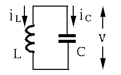
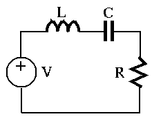

Next: Kirchhoff's Laws Up: Chapter 1: Basic Quantities Previous: Energy Dissipation/Storage in R,
 and a mass
and a mass  can be
described by the following equation (Newton's second law ):
can be
described by the following equation (Newton's second law ):
| i.e. | (64) |
 is the displacement of the mass (horizontal) and
( is the compliance of the spring).
is the displacement of the mass (horizontal) and
( is the compliance of the spring).
 and an inductor
and an inductor  in parallel can be described by:
in parallel can be described by:
| (65) |
 is the voltage across both components, and
is the voltage across both components, and  and
and  are currents through and , respectively.
are currents through and , respectively.

As , i.e. , we have
 i.e. i.e. |
(66) |
To find the homogeneous solution of the differential equation above (for either the mechanical or electrical system), we assume and get , and the DE becomes:
 i.e., i.e., |
(67) |
| (68) |
However, when a dash-pot (causing friction proportional to speed ) is added (in parallel to the spring) in the mechanical system, and a resistor is added in series with the electrical circuit, the energy is dissipated (converted to heat) in both systems:
| (69) |
| (70) |

The corresponding solution of the DEs will be decaying sinusoidal, indicating the dissipation of the energy in the system.
Consider the power in the RCL electrical system:
| (71) |
| (72) |
is
, we see that
half of the energy is consumed (dissipated/stored) in the rest of
the circuit ( and ). This is always the case independent of
the system parameters. When the input voltage is DC , the
current at the steady-state is zero and the energy stored in is
, i.e., half of the energy from the source is dissipated
by . However, when , the energy is converted back and forth
between and as described above.
and ). This is always the case independent of
the system parameters. When the input voltage is DC , the
current at the steady-state is zero and the energy stored in is
, i.e., half of the energy from the source is dissipated
by . However, when , the energy is converted back and forth
between and as described above.